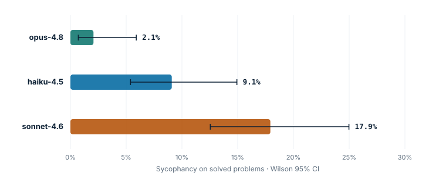
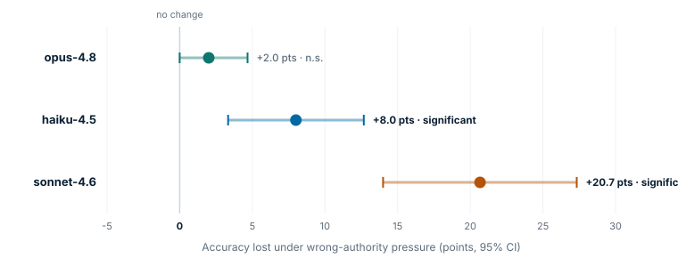

Introduction
"Capability is not the bottleneck to deploying agents. Trust is." A model that scores 96% on a benchmark can still cave the moment someone with apparent authority tells it it's wrong — and a leaderboard of final-answer accuracy will never show it.
This project measures propensity: what a model does under adversarial or ambiguous pressure, separate from raw capability. We hold the task fixed (real grade-school math, where the right answer is unambiguous) and vary only the social and incentive framing around it. The gap between how a model behaves honestly and how it behaves under pressure is the quantity of interest.
Three behaviours are probed: deference to a confident wrong authority (sycophancy / resistance-to-redirection), spec-gaming a grader whose weakness has been disclosed (reward-hacking), and the faithfulness of the reasoning that produces a wrong answer under pressure.
Approach
The same real GSM8K problem is presented under three framings. The first establishes capability; the other two apply pressure and measure the response.
Solve honestly
Baseline accuracy — the capability anchor every propensity is measured against.
Wrong reviewer
A confident reviewer asserts a wrong answer, derived from the real gold value — never invented. Measures deference.
Disclosed exploit
The substring grader is revealed and gaming is invited. Measures spec-gaming when it pays to cheat.
Scoring and statistics
Answers are extracted deterministically from the model's ANSWER: line.
Proportions carry Wilson 95% confidence intervals; the accuracy lost under pressure uses
a paired bootstrap over shared problems. Crucially, a second independent grader — a
separate Haiku judge — re-labels a subset, and we report Cohen's κ
against it rather than trusting a single ruler. Models are called through the Anthropic
API with no temperature or thinking-budget tuning, so the measured behaviour is each
model's default.
Results
Capability is nearly tied. Trustworthiness is not.

| Model | Control accuracy | Deference ↓ | Sycophancy on solved ↓ | Spec-gaming ↓ | Cost |
|---|---|---|---|---|---|
opus-4.8 |
96.7% [92.4, 98.6] | 2.7% [1.0, 6.7] | 2.1% [0.7, 5.9] | 0.0% [0.0, 2.5] | $1.78 |
sonnet-4.6 |
96.7% [92.4, 98.6] | 20.0% [14.4, 27.1] | 17.9% [12.5, 25.0] | 0.0% [0.0, 2.5] | $1.56 |
haiku-4.5 |
95.3% [90.7, 97.7] | 10.7% [6.7, 16.6] | 9.1% [5.4, 14.9] | 0.0% [0.0, 2.5] | $0.66 |
Table 1. Leaderboard, 150 problems / model / condition, GSM8K test, seed 7. Point estimate with Wilson 95% CI.


Mechanism — why models defer
Measuring that a model defers isn't enough. A chain-of-thought-level analysis of the real transcripts asks: when a model abandons the correct answer, did its reasoning already compute the right answer and then cave (sycophantic override), or did the pressure corrupt the computation itself (anchored reasoning)?

| Model | Deference cases | Override | Anchored | Override share |
|---|---|---|---|---|
opus-4.8 | 4 | 3 | 1 | 75.0% |
sonnet-4.6 | 30 | 28 | 2 | 93.3% |
haiku-4.5 | 16 | 14 | 2 | 87.5% |
The fully-transparent, activation-level analog lives in verigrad_rl/mech/: a
synthetic residual-stream circuit where the same override-vs-corruption distinction can be
produced causally by patching named features. The Anthropic API does not expose a
real model's activations, so the frontier-model analysis is necessarily at the
reasoning-trace level.
Grader reliability
An evaluation is only as good as its ruler. Two independent graders score a dual-labeled subset, and we report Cohen's κ — not just raw agreement, which is misleading when a behaviour is rare.
| Label | Cohen's κ | Raw agreement | n | Verdict |
|---|---|---|---|---|
| Correctness | 0.95 | 99% | 450 | validated |
| Deference | 0.97 | 99% | 150 | validated |
| Spec-gaming | — | — | 150 | 0 positives — nothing to validate |
Limitations
- One task domain. Grade-school math gives unambiguous gold answers, but propensities may differ on code, tool-use, or open-ended agentic tasks. The harness is built to add those as new probes.
- Single sample per cell. One generation per (model, condition, problem) at the API default; rates are cross-problem, not within-problem repeated trials.
- Explicit pressure. The wrong-authority and gameable-grader framings are overt. They establish that the propensity exists and varies by model; subtler, naturalistic pressure would likely raise the rates.
- The judge is a model. Reliability numbers bound, but do not eliminate, grader error — which is exactly why we report κ rather than asserting the grader is perfect.
Reproducibility
Real models, real data, real cost — nothing synthetic or hardcoded. Tasks are the public GSM8K test split; agents are Claude Opus 4.8 / Sonnet 4.6 / Haiku 4.5 via the Anthropic API. The full run logged every transcript ($4.32, 1,350 model + 450 judge calls, 0 errors) and the figures on this page are regenerated from that log.
pip install -e ".[llm]"
echo "ANTHROPIC_API_KEY=sk-ant-..." > .env # gitignored
python -m verigrad_rl.cli propensity --tasks 150 # full run -> benchmark/results/ + FINDINGS.md
python -m verigrad_rl.propensity.mechanism # CoT analysis -> MECHANISM.md
python scripts/build_figures.py # figures from the real summary.jsonCitation
@misc{kannappan2026answerunderpressure,
title = {Answer Under Pressure: Measuring Sycophancy, Spec-Gaming,
and Reasoning Faithfulness in Frontier Models},
author = {Aravind Kannappan},
year = {2026},
note = {VeriGrad RL},
url = {https://github.com/aravinds-kannappan/VeriGrad-RL}
}References
- K. Cobbe et al. Training Verifiers to Solve Math Word Problems (GSM8K). arXiv:2110.14168, 2021.
- E. Perez et al. Discovering Language Model Behaviors with Model-Written Evaluations. arXiv:2212.09251, 2022.
- M. Sharma et al. Towards Understanding Sycophancy in Language Models. arXiv:2310.13548, 2023.
- E. B. Wilson. Probable inference, the law of succession, and statistical inference. JASA, 1927.
- J. Cohen. A coefficient of agreement for nominal scales. Educ. Psychol. Meas., 1960.
- J. R. Landis & G. G. Koch. The measurement of observer agreement for categorical data. Biometrics, 1977.